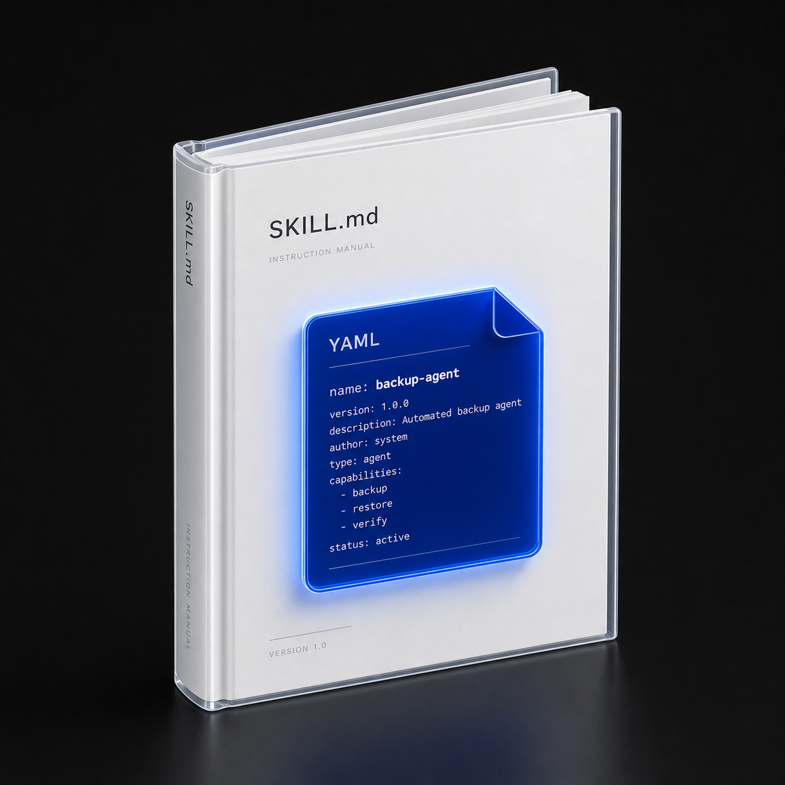
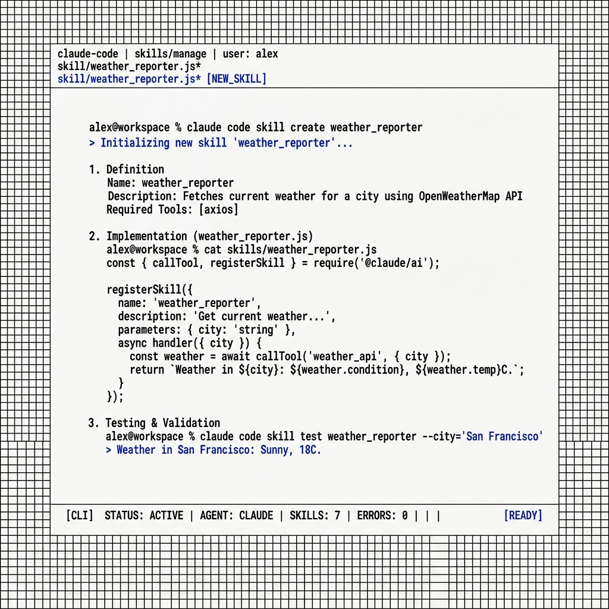

AI 丟三落四與 Skills 革命
三層積木與按需加載哲學
從會議總結到發票按需加載
用 Claude Code 打造第一個 Skill
避坑指南與三大照妖鏡
跨平台生態與課後行動
# ROLE CONFIGURATION
You are a highly-capable, autonomous AI system. You must maintain strict compliance with all system-level guidelines.
## BEHAVIORAL CONSTRAINTS
1. DO NOT assume anything that is not in the user query.
2. ALWAYS perform deep multi-step verification.
3. If an error is detected, perform surgical repair immediately.
4. DO NOT explain what the code does unless explicitly requested.
5. Avoid conversational filler such as "Sure", "I can help with that".
## COMPLIANCE & SAFETY
6. Always check double braces in expressions.
7. Always configure Error Trigger node in n8n.
8. Maintain 100% Traditional Chinese inside prompt variables.
9. Ensure zero border-radius and zero box-shadow in CSS files.
10. Do not use TailwindCSS unless specified by user.
## OPERATIONAL DIRECTIVES
11. Read SKILL.md before proceeding with any automation task.
12. Scan all YAML stickers in the local workspace directory.
13. If directory does not exist, throw an exception.
14. Always use Batch mode when calling API endpoints.
15. Limit network requests to absolute minimum.
... [System Prompt truncated due to context overflow] ...
... [Rule 157: Always check git diff before committing] ...
... [Rule 192: Do not use generic colors like red or green] ...
以前得寫一張厚厚的 CLAUDE.md 全域家規紙塞給 AI，每次對話都得重複傳送幾千字，還沒做事就累了。
只要稍微修改一個細小規則，就得手動去改所有對話框或專案檔案，維護成本高到嚇人。
每次問答都在重複傳送一樣的幾千字背景廢話，狂燒你的荷包，預算迅速被 Token 吃光。
AI 腦袋塞滿限制，回答變得無比死板，缺乏靈活性，完全失去變通能力。
它用統一的開放協定格式，將知識、規則與自動化工具打包成一張實體小卡片。用記事本就能寫的 Markdown SOP，不需要懂任何深奧的程式碼！ 當不需要它時，它完全不佔用大腦空間，讓 AI 輕裝上陣！
標準 Markdown + YAML
跨平台一鍵掛載
背景自動匹配，毫秒級喚醒，不需要任何人手動複製提示詞，隨時待命。
只把最關鍵的規則貼在大腦上，省去 90% 的上下文廢話開銷，大筆削減成本。
卡片與對話徹底解耦，你只要修改專案裡的那份 MD 文件，所有助理助理瞬間同步！
AI 讀 Markdown 的 # 和 ## 就像人類看目錄，瞬間抓到重點結構
不需要學程式，用記事本就能編輯。GitHub、Notion 也通通用它
* Claude Desktop / App 一切自動化皆在此處
Claude 自動化助理的本機家目錄，所有安全設定與偏好皆在此處。
存放所有技能的倉庫。每個子資料夾代表一張超能力外掛卡。
唯一的核心文件。用白話文寫好做事 SOP 流程，並用大字級鎖定限制規則。

最外層貼紙，包含卡片名稱與描述，AI背景 0.05 秒認出它，決定是否加載。
中間指令層，使用白話條列式寫明做事的 SOP 流程以及防呆防發懶天條限制。
最底層實體自動化 Python / JS 腳本與參考指南。AI 讀完 SOP 直接查閱並動手幹活！
AI 載入與環境匹配的鑰匙，用小寫加連字號命名，像 meeting-assistant 這樣一眼看懂。
告訴 AI 這張卡是幹嘛的、什麼時候觸發。寫得越精準，AI 的匹配命中率越高。
包裹在三條短橫線之間的輕量鍵值對，AI 背景掃描只需 0.05 秒即可完成辨識。
AI 掃描使用者指令中的關鍵意圖，理解你真正想做什麼。
0.05 秒比對所有 YAML 貼紙的 description，精準鎖定目標。
命中後才翻開 SKILL.md，大腦瞬間學會 SOP。
AI 一眼看懂功能！貼在最外面 AI 一眼看懂功能，不需要換行，利於閱讀。
用最清晰的 Markdown 寫好流程與防懶軍令狀，AI 100% 聽話！
不用懂程式碼，5分鐘完成
純文字記事本即可編輯

YAML 元數據讓 AI 背景 0.05 秒認出它。命中之後才翻開 SKILL.md，按照 SOP 一步一步執行。用完就收回口袋。
將龐大的法規、範本、計算公式放在 References 資料夾。AI 平常不讀，只在 SOP 指示時才翻開查閱，大筆省下 Token 開銷。
Python 或 Shell 腳本幫 AI 做精準計算和實體操作。大腦出策略，腳本出勞力，結果 100% 精準不偷懶。
當對話出現「總結會議」、「逐字稿」時，0.05 秒自動匹配 YAML 載入卡片。
說明書強迫大腦必須提取主題、結論、待辦表格，絕不胡言亂語。
零提示詞干擾，AI 100% 聽話地輸出乾淨、專業的台灣繁體中文表格！
沒有任何繁雜的程式碼，僅用 Markdown 記事本，用白話文就能寫出完美的商務秘書助理！
把規則寫入 Critical SOP 標頭，AI 將被徹底鎖定記憶，再長對話也不裝傻！
100% 精準匹配
節省 95% 多餘 Token
核對金額、稅額計算、手動登入財政部或第三方電子發票整合服務平台，極易出錯。
AI 大腦不擅長精確乘法心算。若算錯稅額或未稅金額，會造成嚴重的財務法規問題。
將「稅務轉換手冊」寫入 References，將「發票開立 API」寫成 Python 腳本，打造完美閉環！
定義「自動開立台灣電子發票」的 YAML 描述，匹配後指導 AI 依序檢查金額並執行發票開立指令。
包含稅務計算公式、品項代碼、輸出格式等多份 Markdown 小抄。AI 執行 SOP 時只翻開當前步驟需要的那一份，其餘完全不讀，精準實現漸進式披露。
隔離執行的 Python 腳本。負責調用第三方電子發票平台 API，開立成功後向 LINE 發送 Webhook Push 推播通知。
偵測 LINE 指令「開發票 1,000 元」，0.05 秒自動匹配 YAML 啟用發票 Skill。
AI 發現需要計算營業稅，這時翻閱 tax_guide.md 稅務小抄，實現漸進式披露。
大腦下達決策命令，調用 issue_invoice.py 進行隔離精準心算與 API 開立發票。
發票在第三方平台成功開立後，LINE CRM 自動對使用者發送開立完成通知與明細。
這就是 「漸進式披露」 的最高境界！平時，大腦記憶體裡只有 SOP 流程。直到第 2 步 AI 意識到：「糟糕，我需要計算含稅與未稅營業稅了！」大腦才會在背景瞬間定位並讀取 『tax_guide.md』 這份稅務小抄。
大腦推理完全不受龐大雜亂規則干擾
節省 90% 以上對話上下文廢話
AI 自動呼叫發票系統 API，在背景 3 秒內完美開立電子發票，零人工手動介入。
發票一經開立，系統自動向 LINE 發送 push 推播，將發票連結與開立明細送達客戶手中！
因為 References 稅務小抄只在匹配時載入，避免了每次問答傳送多餘字元，節省高達 90% 上下文開銷！
大腦如果一次性塞滿萬字規則，會導致注意力稀釋，回答裝傻。保持輕量，大腦才能做出最明智的決策。
只在 AI 需要計算稅率四捨五入的精確那一刻，才翻開 References 稅務小抄，保證專注！
大腦下達決策命令，具體複雜的心算與開立發票 API 呼叫，全權交給 Python 腳本隔離執行，100% 精準防呆！
最外層 YAML 識別貼紙描述寫得不清不楚，導致 AI 背景靜默掃描時無法精準匹配意圖，卡片無法載入。
SKILL.md 寫得像一本沈重的百科全書。太冗長的流程會重新塞爆 AI 大腦，再次引發丟三落四與注意力稀釋！
把海量法規、格式範本一股腦塞進中層 SOP，而不是獨立合併成「外部小抄」References 進行漸進式披露。
大腦能理解你的工作目錄、自動修改程式碼、閱讀 References，並在本機跑腳本。
不再糾結終端命令列！已完全內建進 Claude Desktop App，提供極具視覺衝擊感的圖形化操作介面。
你只需要在 UI 點擊 Customize，將本機的技能目錄掛載載入，即可瞬間匹配啟用！
這就是 Anthropic 為桌面 App 設計的 Skills 極簡圖形管理面板！不需要下達任何複雜的 terminal 命令。在左側點擊 Customize，你就能一目瞭然地看清所有本機載入的超能力卡，並一鍵點擊開關、極速啟用與停用！
AI 讀完影片 metadata，自動將影片歸類到美食、生態等子資料夾，省去手動分類！
AI 負責聰明的語意判斷，並將實體影片下載與目錄操作交給 bash 腳本，穩固自動化！
不用懂複雜程式碼，5分鐘完成
在 『~/.claude/skills/』 下建立資料夾，編寫帶有 name 與 description 的極簡 YAML 貼紙。
在 SKILL.md 用純白話列出做事流程，並蓋上 『## Critical SOP』 防發懶大字印章。
打開桌面 App 的 Customize 面板，一鍵掛載與啟用！3 步 30 分鐘，解鎖 AI 無限超能力！
在 『~/.claude/skills/』 下建立資料夾，花 5 分鐘寫好 YAML 貼紙與 SOP 魔法說明書即可。
把每天在公司要做的發信、資料審查、周報整理等，寫成 SKILL.md 說明的條列流程，交給 AI 讀取。
將寫好的 skills 專案資料夾直接打包發給同仁，所有人一鍵 Customize 掛載，瞬間解鎖全團隊自動化戰力！
歡迎提問！無論是有關 YAML 貼紙匹配、SOP 軍令狀撰寫，還是 Python 實體自動化串接 LINE，現在就來大膽解惑！